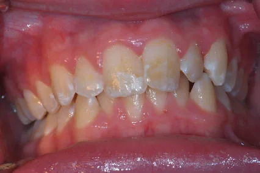

نسخه استخراجشده؛ ترجمه یا تأیید علمی انجام نشده است. وضعیت: captured
فلوروزیس نتیجهی بلع مزمن فلوراید در دورهی ساخت مینا است. پس از پایان ساخت، هر مقدار فلوراید هم که بلعیده شود دیگر فلوروزیس نمیسازد.
دورهی حساس ثنایاهای دائمی حدود ۱۵ تا ۳۰ ماهگی است — دقیقاً همان سنی که کودک خمیردندان را قورت میدهد و مکمل تجویز میشود.
نمای بالینی: از خطوط سفید ظریف تا لکههای منتشر، و در موارد شدید تغییر رنگ قهوهای و کندگی سطحی.
نشانهی افتراقی کلیدی: فلوروزیس قرینه است و دندانهای همزمانساز را با هم درگیر میکند، با مرزهای محو. در برابرش MIH نامتقارن است و مرزهای تیز و مشخص دارد.

برخلاف فلوروزیس که سالها طول میکشد، مسمومیت حاد در یک نوبت رخ میدهد — معمولاً وقتی کودک بطری وارنیش، قرص یا دهانشویه را میخورد.
دوز احتمالاً سمی حدود ۵ میلیگرم فلوراید به ازای هر کیلوگرم وزن بدن است. این عددی است که باید حفظ باشی.
نخستین نشانهها گوارشیاند: تهوع، استفراغ، درد شکم و افزایش بزاق — چون فلوراید در معده به اسید هیدروفلوریک (HF) تبدیل و مخاط را تحریک میکند.
اقدام فوری: خوراندن شیر یا فرآوردهی کلسیمدار برای بستن فلوراید در معده. اگر مقدار بلعیدهشده از آستانه گذشته یا نامعلوم است، ارجاع فوری به اورژانس — منتظر بدتر شدن نمان.
نوع سؤال: ساخت کلمه · 5 خانه
حروف منبع: ی · ل · ک · س · م